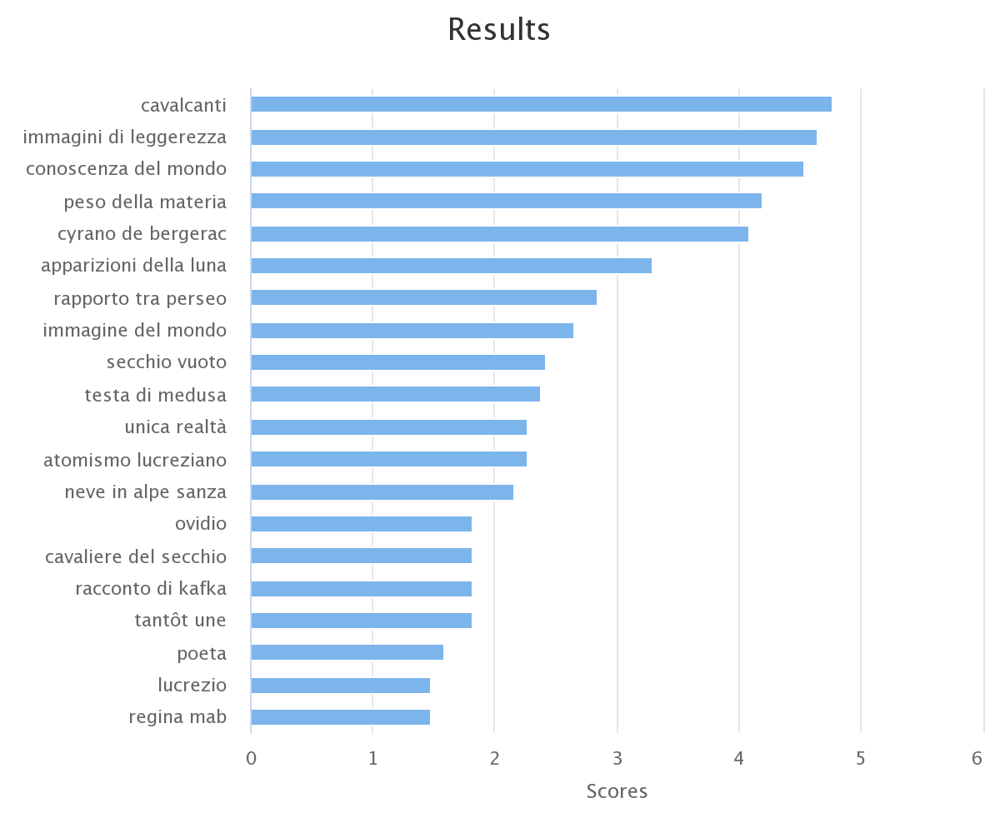

The cognitive sphere and the cross-references have a predominant presence in the definition of the sphere of the unsaid in this lecture. However, it can be noticed that there is a concentration of interpretative elements throughtout the paragraphs, while the cognitive sphere is more spread through the text.
We can deduce that the reflection over the relation between the written and the unwritten world, literature and reality, concerns the entire lecture; that in several passages Calvino directly involves the reader in his reflections; that the many authors mentioned in the text, covering the history of literature from its origins, have served to the author for the definition of the principle of lightness as a fundamental value of literature.
List of quotations from cross-references:
Overview of the interpretative fields:
Overview of the languages used:
Type of people mentioned:
List of titles of the works referenced in the lecture:
Keyphrases in the lecture, extracted by using the Keyphrase Digger
The results of the extraction confirm the prevalence of the cognitive sphere, through the reflection over the world and the wide use of symbolic objects to represent and understand the world's complexity.